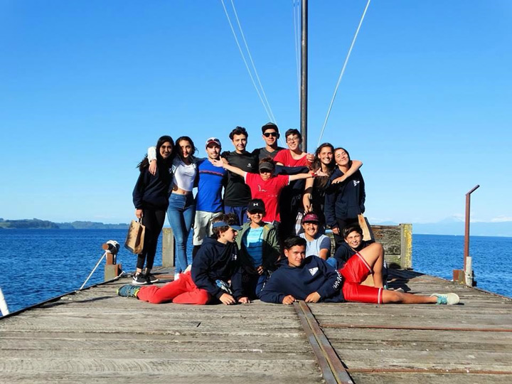

La Fundación Futuro de Valparaíso, por tercer año consecutivo, comenzó proceso de charlas motivacionales a contar de mediados de abril dirigida a profesores y futbolistas de las divisiones inferiores de Santiago Wanderers, y que se extenderán durante todo el año en curso. Con estas clases teóricas conducidas por la Fundación por una Carrera, Fundación Futuro Valparaíso busca generar una motivación técnica profesional en la cual jóvenes que son formados por futbolistas profesionales lleguen a rendir la PSU y/o se inserten en una carrera profesional.
A través del humor negro, “Burócratas”, la obra de teatro que FPP pondrá en estreno en Valparaíso, Santiago y Concepción apunta a desatar en los espectadores una profunda reflexión sobre la realidad política y social de nuestro país. Esta nueva puesta en escena es protagonizada por Claudio Valenzuela, Claudia Hidalgo, Hernán Contreras y Catalina González, destacados actores de las tablas y la televisión. Su estreno será en Valparaíso el 12 de mayo, posteriormente en Santiago el 18 del mismo mes y terminará la gira en Concepción a principios de junio. De esta forma se busca revalorar el espacio cultural en las regiones.
El 31 de mayo próximo, Fundación Oportunidad Mayor realizará el seminario “Desde Valdivia hacia Chile: Abordando el Fenómeno del Envejecimiento”, el cual apunta a convertir a Valdivia en un Polo Gerontológico. En la jornada se discutirá desde la necesidad de que las ciudades del mundo se adapten a los requerimientos de los adultos mayores, el impacto que tiene para Chile la promulgación de la Convención Interamericana de Derechos Humanos de las Personas Mayores hasta los cambios demográficos y desafíos que trae la ciencia para el envejecimiento. La jornada incluirá exposiciones de distintos especialistas sobre el adulto mayor y se llevará a cabo en la Universidad San Sebastian de Valdivia durante toda una mañana.
Alexandre Kalache hablará sobre la necesidad de que las ciudades del mundo se adapten a los requerimientos de los adultos mayores. La OMS definió para ello ocho dimensiones: entorno construido, transporte, vivienda, participación social, respeto e integración social, participación cívica y empleo, comunicaciones, y servicios de apoyo comunitario y de salud.
Rosita Kornfeld expondrá sobre el impacto que tiene para Chile la promulgación de la Convención Interamericana de Derechos Humanos de las Personas Mayores.
Bredford Kerr entregará su visión desde el mundo de la investigación científica y los desafíos que trae para la ciencia el envejecimiento.
Daniela Thumala hablará sobre los procesos psicológicos asociados al envejecimiento, el fenómeno del viejismo y la forma en que se debieran enfrentar los cambios físicos y mentales que trae la edad.
Catalina Correia abordará las tendencias demográficas y principales indicadores del segmento mayor en Chile, sus demandas y expectativas.
Una gran oportunidad tuvimos en el CEDENA Puerto Williams al recibir la visita de Howard Rice, yatista norteamericano que sufrió una caída desde su embarcación a fines de febrero y fue rescatado en el Canal Brecknock por un patrullero de la Armada de Chile. Howard, de 65 años, compartió su experiencia con los niños, jóvenes, padres y todo el equipo, poniendo énfasis en el autocuidado y en la vestimenta que se debe utilizar para travesías que cuentan con alto nivel de riesgo.
En la oportunidad, comentó que resistió la hipotermia dado que portaba cuatro capas de sobrevivencia debajo de su salvavidas, contaba con alimento, una manta térmica de aluminio y obtuvo la rápida respuesta de la Armada de Chile, quien media hora después lo localizó y rescató. En la parte central, destacó que en esos momentos fue fundamental el fuerte vínculo con la familia y amigos para sobrellevar la complejidad de lo vivido. Al término, Howard estrechó su mano a los amigos de CEDENAPW, valorando nuestra preocupación por el equipo que proporcionamos a nuestros niños.
Con entrenamientos físicos en el polideportivo de Panguipulli y prácticas acuáticas tres por semana trece navegantes se preparan para participar en las regatas de vela competitiva. Durante el mes de abril, Cedena- P participó en la VI Regata de Otoño organizada por el Colegio Alemán de Frutillar en Puerto Octay, en la cual Nataly Medina logró tercer lugar en competencia de Laser 4.7, Felipe Carrasco, obtuvo el primer lugar en Laser radial, Damián Cárdenas y Yeison Celis alcanzaron primer y cuarto lugar, respectivamente en la disciplina Optimist Principiante y en Optimist Avanzado, Natalia Vera logró el quinto lugar mientras Andrés Asenjo conquistó el podio.

Con paseos y más deportes náuticos niños activan en CEDENA- Panguipulli.
Cedena Panguipulli: Crece y diversifica sus actividades
Tres nuevos establecimientos educaciones se incorporaron esta temporada 2017 a los talleres teórico-prácticos de natación, los cuales junto a los otros seis continuarán durante el año con otras disciplinas como el kayak, stand up paddle y navegación en vela menor que proporciona gratuitamente CEDENA Panguipulli en niños y jóvenes de zona urbana y rural en la región.
Paralelamente, Cedenap está organizando salidas grupales de carácter pedagógicas al Fundo Puyumen, acompañados de docentes y agrónomos para que conozcan y se empapen de la belleza que ofrece el hábitat natural. A la fecha, son 175 niños y niñas de entre 8 y 15 años, beneficiados de forma activa por CEDENAP.